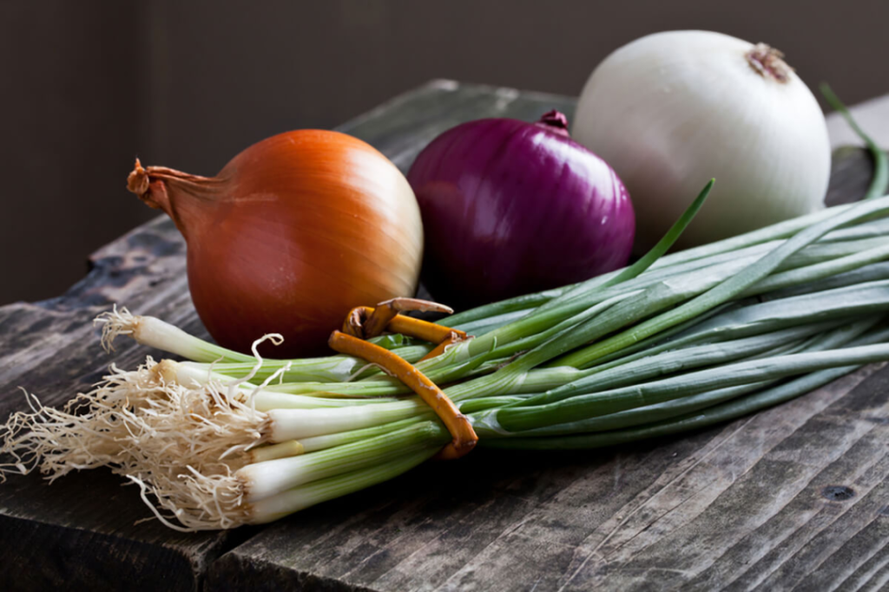

Agridera Fresh Market Onion Hybrids
×××××
Agridera strives to be a global leader in the breeding, production, and marketing of onion seeds.
Our extensive investment in research and development enables us to provide innovative solutions for
growers and consumers in multiple regions worldwide. We focus on developing improved disease-resistant
varieties tailored to various market demands.
Currently, we prioritize breeding onions with resistance to key diseases, including Downy Mildew (Peronospora destructor), Pink Root (Phoma terrestris), and Fusarium Basal Rot (Fusarium oxysporum f.sp. cepae). Additionally, efforts are underway to enhance resistance to emerging threats such as Onion Smut (Urocystis cepulae).
In terms of agronomic and horticultural traits, we focus on early maturity, bulb size uniformity, strong skin retention, pungency levels, and storability. We aim to combine high-yield potential with resistance to biotic and abiotic stresses across various onion types, including short-day, intermediate-day, and long-day varieties.
Currently, we prioritize breeding onions with resistance to key diseases, including Downy Mildew (Peronospora destructor), Pink Root (Phoma terrestris), and Fusarium Basal Rot (Fusarium oxysporum f.sp. cepae). Additionally, efforts are underway to enhance resistance to emerging threats such as Onion Smut (Urocystis cepulae).
In terms of agronomic and horticultural traits, we focus on early maturity, bulb size uniformity, strong skin retention, pungency levels, and storability. We aim to combine high-yield potential with resistance to biotic and abiotic stresses across various onion types, including short-day, intermediate-day, and long-day varieties.
We concentrate on three main segments: Greenhouse Onion Hybrids, Open-Field Short-Day Onions, and Long-Day Storage Onions.
Greenhouse Onion Breeding Program
Targeted for controlled-environment agriculture, particularly in the Mediterranean and North American markets.
Our breeding efforts focus on early maturity, uniform round bulbs, and resistance to Downy Mildew and Fusarium Basal Rot.
Certain hybrids may include additional resistances, such as Botrytis Leaf Blight.
Open-Field Short-Day Onions
Developed for regions such as South America, India, and the Middle East, these hybrids emphasize early bulb formation (120–140 days),
resistance to Pink Root and Fusarium, and suitability for fresh market consumption. Future breeding goals include enhanced bolting tolerance.
Long-Day Storage Onions
Bred for European and North American markets, these varieties are selected for robust skin retention, high yield, and resistance to
Downy Mildew and Fusarium Basal Rot. With extended storage capabilities, they are well-suited for long-term supply chains.
Agridera operates through an extensive network of international and local distributors, ensuring accessibility to premium-quality onion hybrids worldwide.
{{p.title}}
{{p.short_text}}